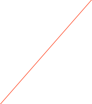

CAEN V1720

The Mod. V1720 is a 1-unit wide VME 6U module housing a 8 Channel 12 bit 250 MS/s Flash ADC Waveform Digitizer with threshold Auto-Trigger capabilities. Input dynamics is 2 Vpp (single ended or differential).
The DC offset of the input signal can be adjusted channel per channel by a programmable 16bit DAC on single ended input version.
The modules feature a front panel clock/reference In/Out and a PLL for clock synthesis from internal/external references. This allows multi board phase synchronizations to an external clock reference or to a clock Digitizer master board.
The data stream is continuously written in a circular memory buffer. When the trigger occurs, the FPGA writes further N samples for the post trigger and freezes the buffer that can be read either via VME or via Optical Link. The acquisition can continue without dead time in a new buffer.
Each channel has a SRAM memory buffer (from 1.25 to 10 M Samples/ch) with independent read-write access divided in buffers of programmable size (1 ÷ 1024). “Zero suppression” and “data reduction” algorithms allow substantial savings in data amount readout and processing, rejecting samples smaller than programmable thresholds.
The trigger signal can be provided via the front panel input as well as via the VMEbus, but it can also be generated internally. The trigger from one board can be propagated to the other boards through the front panel Trigger Output.
An Analog Output allows to reproduce the sum of the input signals as well as the majority of the buffer occupancy.
The Modules VME interface is VME64X compliant and the data readout can be performed in Single Data Transfer (D32), 32/64 bit Block Transfer (BLT, MBLT, 2eVME, 2eSST) and 32/64 bit Chained Block Transfer (CBLT).
The boards houses a daisy chainable Optical Link able to transfer data at 80 MB/s, thus it is possible to connect up to eight ADC boards (64 ADC channels) to a single Optical Link Controller (Mod. A2818). Optical Link and VME access are internally arbitrated..
Please refer to the manual for more details.
V1720 Data Record format
The data records for the CAEN cards is exactly as produced by the cards with the addition of a header that 'wraps' the data for ORCA. It is a variable length record. Only the long form is used. The format is:
xxxx xxxx xxxx xxxx xxxx xxxx xxxx xxxx
^^^^ ^^^^ ^^^^ ^^-----------------------Object ID (from header)
-----------------^^ ^^^^ ^^^^ ^^^^ ^^^^-n longs + 2
xxxx xxxx xxxx xxxx xxxx xxxx xxxx xxxx
^^^^ ^^^^-------------------------------spare
----------^^^^--------------------------crate
---------------^^^^---------------------card
--------------------^^^^ ^^^^ ^^^^ ^^^^-spare
n longs of data follow immediately. The format
is as described in the card's documentation.


Set the VME Address



The write value and the channel to use
Operation to do on the selected register using the current set of values
Extra Info about the selected register

The card’s register list. the current operation will be applied to he selected register. See the documentation that came with the card for more information on each register
Typical scope-type commands
Just the event rates